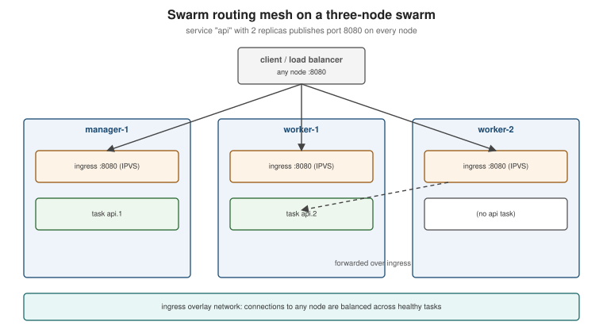

Orchestration: Swarm Mode and Kubernetes
|
This content was generated with the assistance of AI and should be verified against the official documentation before being relied on in production. |
Docker Engine runs containers on one host. When an application needs several hosts — for capacity, for availability, or for rolling updates without downtime — something has to schedule containers across machines, restart them when a node fails, route traffic to them and roll out new versions: an orchestrator. This page summarises Docker’s own orchestrator, Swarm mode, points to Kubernetes as the industry default, and connects both to the rest of this section. It targets Docker Engine 29.8.x and Docker Desktop 4.91 or later; Kubernetes itself is covered in its own section, starting at Kubernetes.
When one host is not enough
rolling updates and self-healing?"} c -->|No| comp["Docker Compose on a single host"] c -->|Yes| d{"Team already runs Kubernetes, or needs
its ecosystem (operators, Helm, autoscaling)?"} d -->|Yes| k8s["Kubernetes (managed or self-hosted)"] d -->|No, small cluster, Compose-shaped app| sw["Docker Swarm mode"] comp -.->|compose bridge convert| k8s comp -.->|docker stack deploy| sw
Swarm mode in summary
Swarm mode is built into Docker Engine (docker swarm init). Its concepts:
| Concept | Meaning |
|---|---|
Nodes |
Docker Engines joined into a swarm. Managers hold the cluster state, replicated with the Raft consensus algorithm (run an odd number: 3 or 5), and schedule work; workers run tasks. |
Services and tasks |
A service declares the desired state (image, replicas, ports, update policy); the managers create tasks — one container each — on suitable nodes and replace failed ones. |
Stacks |
A Compose file deployed as a group of services with |
Routing mesh |
A published port is opened on every node; the ingress overlay network load-balances connections to healthy tasks wherever they run. |
Overlay networks |
Encrypted-capable networks spanning all nodes; services resolve each other by name. |
Secrets and configs |
Both are stored in the encrypted Raft log and mounted into tasks as files, at different default paths in Linux
containers. Secrets are mounted on an in-memory filesystem at |
Rolling updates |
|

docker swarm init --advertise-addr 10.0.0.10 # on the first manager; prints a join command
docker swarm join --token <worker-token> 10.0.0.10:2377 # on each worker
docker node ls
printf '%s' "$DB_PASSWORD" | docker secret create db_password -
docker stack deploy --compose-file compose.yaml orders
docker service ls
docker service update --image ghcr.io/myorg/orders-service:1.4.1 \
--update-parallelism 1 --update-delay 10s --update-failure-action rollback orders_api
docker service ps orders_api # task history, including failed updatesDerived from Swarm mode overview,
Swarm mode key concepts,
Use Swarm mode routing mesh,
Deploy a stack to a swarm and
Apply rolling updates to a service.
docker stack deploy ignores build: and some Compose-only attributes; images must already be in a registry.
Its position today, honestly: Swarm mode is maintained, simple to operate and a good fit for a handful of hosts running a Compose-shaped application. The ecosystem, managed offerings, tooling and hiring market, however, have consolidated around Kubernetes; choose Swarm deliberately, not by default.
Kubernetes
Kubernetes schedules OCI images just as Swarm does, with a far larger API: Deployments, Services, Ingress/Gateway, ConfigMaps and Secrets, autoscalers, operators. What carries over from Docker unchanged is the image — the same image you built and pushed runs on any Kubernetes cluster via containerd or CRI-O. What does not carry over is the Compose file: Kubernetes has its own manifests. The full treatment is in the Kubernetes section.
-
Docker Desktop’s cluster: enable Kubernetes in Settings > Kubernetes to get a local single-node (kubeadm) or multi-node (kind) cluster and
kubectlconfigured for it. See Kubernetes on Docker Desktop. -
Compose Bridge converts a Compose file into Kubernetes manifests as a starting point (
docker compose bridge convert; see Compose in Practice). -
Deploying Java services: the Quarkus reference covers generating manifests and deploying to Kubernetes and OpenShift in Quarkus: Kubernetes and OpenShift; the same image-first approach applies to a Spring Boot image built as described on Java and Spring Boot Images.
-
Running this on Azure: for a managed control plane instead of self-hosting kubeadm or kind, see AKS Clusters for creating and operating an AKS cluster and Deploying Microservices on AKS for deploying microservices onto it.
-
Running this on AWS: see EKS Clusters for creating and operating an Amazon EKS cluster and Deploying Microservices on EKS for deploying microservices onto it.
-
Running this on Google Cloud: see GKE Clusters for creating and operating a GKE cluster and Deploying Microservices on GKE for deploying microservices onto it.
The Twelve-Factor recap
Chapter 11 of Docker: Up & Running recommends designing containerised services along The Twelve-Factor App, and that advice has aged well. The factors that matter most for containers:
-
Config in the environment (III): the same image in every environment; settings from variables, files or secrets.
-
Backing services as attached resources (IV): the database is a URL, which is what makes Compose and Testcontainers substitution possible.
-
Build, release, run (V): the image is the build; tags and digests identify releases.
-
Stateless processes (VI) and disposability (IX): fast start-up, graceful shutdown on
SIGTERM(see Running Containers). -
Port binding (VII) and logs as event streams (XI): listen on a port, log to stdout.
-
Dev/prod parity (X): the same images and the same
compose.yamllocally and in integration tests (see Compose for Local Development).
For how these principles shape deployment architecture and migrations, see Architecture Decisions and Migration Paths. The same chapter’s pointer to the Reactive Manifesto (https://www.reactivemanifesto.org/) is equally still worth a read.
Historical: 2015-era orchestration
Chapter 9 of Docker: Up & Running describes the orchestration options of 2015. All of them are superseded:
| 2015 tool | Status and replacement |
|---|---|
Standalone Docker Swarm (a separate |
Replaced by Swarm mode built into Docker Engine (since 1.12, 2016). |
Centurion (New Relic’s deployment tool) |
Unmaintained; replaced by an orchestrator’s rolling updates. |
Amazon EC2 Container Service (as described in 2015) |
Now Amazon Elastic Container Service (ECS) and EKS, with very different APIs; out of scope here. |